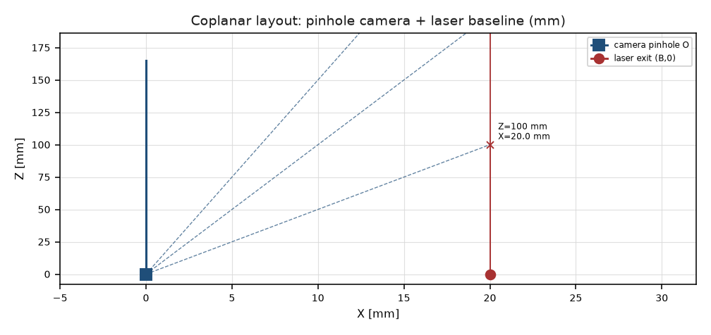
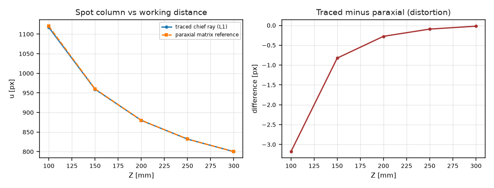
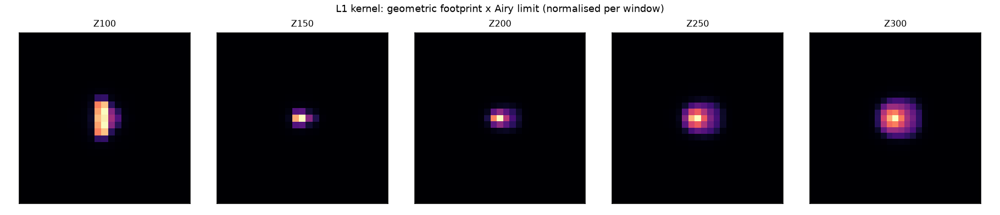
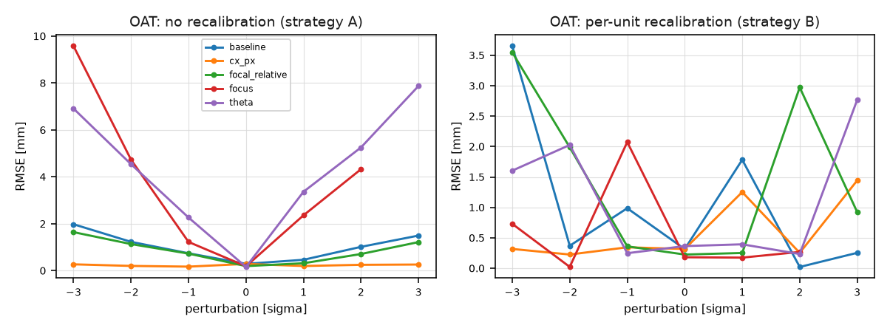
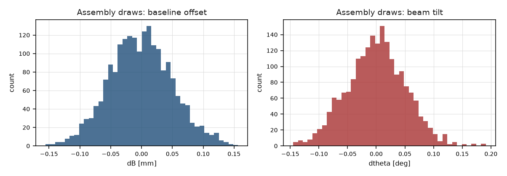
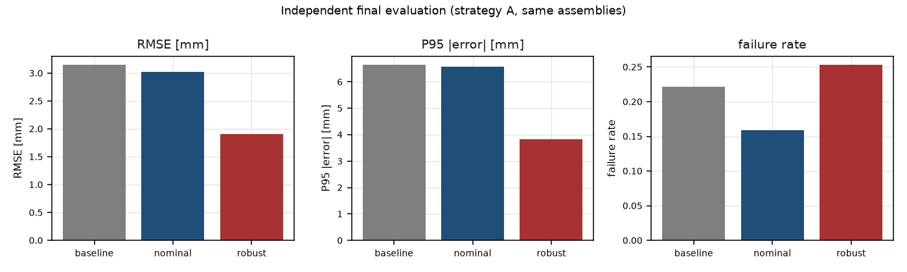
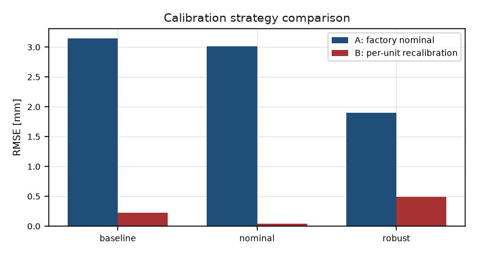

20261019_191117_G2_52369787 ·
model level emitted L1-approximate ·
finished 2026-10-19T20:45:02+00:00EXECUTION PASS SCIENTIFIC GAIN_SUPPORTED_WITHIN_ASSUMED_L1_MODEL
L1-approximate: a real sequential ray trace through an assumed equiconvex N-BK7 singlet, whose geometric footprint is convolved with a scalar Airy diffraction limit. This is not a wavefront-verified PSF, not a measured lens and not a manufacturing-yield study. The G1 L0 chain is unchanged and is used as the controlled baseline.
| source_tree_sha256 | candidate_registry_sha256 |
|---|---|
| d10befe8ac576cc08f8a353c266aef25c409b1ae55f5d1898f95c87a3f96b25e | e21c2d6d4760c6274cfea1c80ffd9568386b48ebcc62fe704eba512ca3bfcabf |
G0 run 20261019_130948_G0_78fa364f · G1 run 20261019_145702_G1_54c9e3fb · both audit ZIPs re-hashed, identical.
| importable | version | backend_executed | trace_rows | radius_1_mm | sensor_distance_mm | f_number |
|---|---|---|---|---|---|---|
| True | 0.6.3 | True | 970 | 7.7215 | 7.2725 | 6.0604 |
| check | pass | value | threshold |
|---|---|---|---|
| PRE05_tests_bound | True | {'totals': {'passed': 252, 'failed': 0, 'skipped': 0, 'total': 252}, 'consistent': True, 'junit_sha256': 'babad1c7ba8da16926cc5d89b4d0200c15c533b902f1737a22ffa5a9f91e0d3c', 'code_sha256': 'd10befe8ac576cc08f8a353c266aef25c409b1ae55f5d1898f95c87a3f96b25e', 'exit_code': 0} | totals bound to code hash, JUnit hash, command and exit code |
| A4_paraxial_small_field | True | 6.968e-04 | 0.0100 |
| A5_pinhole_limit | True | 0.2240 | 0.3000 |
| A6_aperture_monotone_spot | True | [0.5750642275642631, 1.3382460718176568, 2.4923426122565737, 4.254641911048221, 6.852392474889991] | strictly increasing with aperture |
| A7_focus_defocus | True | {'offset_mm': [-0.4, -0.2, -0.1, -0.05, 0.0, 0.05, 0.1, 0.2, 0.4], 'rms_radius_um': [16.3234756883409, 6.343780068758576, 1.9141364956082498, 2.122672223751348, 4.254641911048221, 6.667281289184276, 9.140991377474519, 14.143237084885056, 24.208078773517602], 'minimum_um': 1.9141364956082498, 'far_mean_um': 20.265777230929253, 'sign_changes': 1} | unimodal U-shape and far-offset blur >= 3x the minimum |
| A8_blocked_rays_counted | True | [0.0, 0.0, 0.0] | < 1.0 blocked and reported |
| A1_backend_importable | True | {'backend': 'optiland', 'importable': True, 'version': '0.6.3', 'version_supported': True, 'error': None, 'module_file': ' | importable and version 0.6.3 |
| A2_real_refracting_surfaces | True | {'radius_1_mm': 7.721498904389647, 'radius_2_mm': -7.721498904389647, 'thickness_mm': 3.0, 'material': 'N-BK7'} | two non-flat surfaces with a real thickness |
| A3_trace_executed | True | 970 | > 0 exported ray rows |
| B1_energy_conservation | True | 2.220e-16 | 0.0050 |
| B2_kernel_nonnegative_normalised | True | {'non_negative': True, 'all_capture_le_1': True} | non-negative and capture <= 1 |
| B4_l0_limit | True | 0.0000 | 0.0100 |
| B5_physics_coupling | True | {'focus_kernel_peaks': [0.030292249985856716, 0.1631068730338939, 0.2793559988402538], 'aperture_kernel_peaks': [0.13436566734727923, 0.1989709308884594, 0.1631068730338939]} | kernel peak changes > 1% across the sweep |
| B7_deterministic_kernel | True | True | bitwise identical |
| B6_degenerate_statuses | True | {'all_rays_blocked_status': 'ALL_RAYS_BLOCKED', 'n_valid': 0} | blocked geometry returns a named non-OK status |
| V4_A_OVERALL | True | PASS | all A1-A9 checks pass |
| V4_B_OVERALL | True | PASS | all B1-B7 checks pass |
| S5_oat_complete | True | {'n_rows': 35, 'levels': 7} | 5 variables x 7 levels with 0 perturbation present |
| S1_zero_perturbation_matches_nominal | True | {'zero_level_present': True, 'estimable': True} | the 0-sigma row of every variable reproduces the nominal result |
| S2_lhs_marginals_normal | True | {'d_baseline_mm': 1.0, 'd_theta_rad': 1.0, 'd_focal_relative': 1.0, 'd_cx_px': 1.0, 'd_focus_mm': 1.0} | KS p > 0.01 for every marginal |
| S6_precheck_draws | True | 200 | >= 200 (or 40 in quick mode) |
| S7_failures_enter_denominator | True | {'rows': 3000, 'optical_failure_rows': 0, 'expected_rows': 3000, 'estimators_per_scene': 3} | every attempt recorded with a status; no NaN deletion |
| O1_objective_frozen | True | {'weights': {'mean_rmse': 0.5, 'p95': 0.35, 'failure': 0.15}, 'scales': {'rmse_mm': 0.05, 'p95_mm': 0.1, 'failure_rate': 0.05}} | weights and reference scales declared before the search |
| O3_all_designs_recorded | True | {'nominal_history': 147, 'robust_history': 138} | every attempted design has a row |
| O6_search_uses_validation_only | True | {'search_distances': [110.0, 140.0, 170.0, 200.0, 230.0, 260.0, 290.0], 'test_distances': [105.0, 135.0, 165.0, 195.0, 225.0, 255.0, 285.0]} | no test distance in the search panel |
| O5_candidates_frozen | True | {'sha256': 'e21c2d6d4760c6274cfea1c80ffd9568386b48ebcc62fe704eba512ca3bfcabf', 'designs': {'baseline': {'baseline_mm': 20.0, 'focal_length_mm': 8.0, 'theta_deg': 0.0}, 'nominal': {'baseline_mm': 15.0, 'focal_length_mm': 11.1, 'theta_deg': 4.0}, 'robust': {'baseline_mm': 34.4, 'focal_length_mm': 7.272384615618831, 'theta_deg': 4.0}}} | registry frozen before the final test |
| H1_assembly_draws | True | 2000 | >= 2000 unless a declared downgrade applies |
| H2_shared_assemblies | True | True | all candidates use the same assembly ids |
| H5_failure_denominator | True | {'baseline': {'n_attempted': 42000, 'n_valid': 32693, 'failure_rate': 0.22159523809523807, 'bias_mm': 0.14105733726746253, 'rmse_mm': 3.14812689267054, 'p95_abs_mm': 6.643043208436627, 'mae_mm': 2.3200327815547364}, 'nominal': {'n_attempted': 42000, 'n_valid': 35337, 'failure_rate': 0.1586428571428572, 'bias_mm': 0.06377380272149234, 'rmse_mm': 3.017621563364543, 'p95_abs_mm': 6.566347551557143, 'mae_mm': 2.145345163787468}, 'robust': {'n_attempted': 42000, 'n_valid': 31373, 'failure_rate': 0.25302380952380954, 'bias_mm': -0.17174673883069203, 'rmse_mm': 1.903109443210548, 'p95_abs_mm': 3.8348805475271317, 'mae_mm': 1.4764414433797097}} | failure rate over all attempts |
| candidate | B_mm | f_mm | theta_deg | n_valid | n_attempted | failure_rate | rmse_mm | p95_mm | bias_mm |
|---|---|---|---|---|---|---|---|---|---|
| baseline | 20.0000 | 8.0000 | 0.0000 | 32693 | 42000 | 0.2216 | 3.1481 | 6.6430 | 0.1411 |
| nominal | 15.0000 | 11.1000 | 4.0000 | 35337 | 42000 | 0.1586 | 3.0176 | 6.5663 | 0.0638 |
| robust | 34.4000 | 7.2724 | 4.0000 | 31373 | 42000 | 0.2530 | 1.9031 | 3.8349 | -0.1717 |
| comparison | n_pairs | dRMSE_mm | CI_low | CI_high | dFailure |
|---|---|---|---|---|---|
| baseline_vs_nominal|centroid | 14000 | -0.1459 | -0.2443 | -0.0492 | -0.0658 |
| baseline_vs_robust|centroid | 14000 | -1.1760 | -1.2180 | -1.1322 | 0.0255 |
| nominal_vs_robust|centroid | 14000 | -1.0250 | -1.1118 | -0.9449 | 0.0913 |
| baseline_vs_nominal|gaussian_2d | 14000 | -0.2217 | -0.3515 | -0.1000 | -0.0189 |
| baseline_vs_robust|gaussian_2d | 14000 | -1.5569 | -1.6683 | -1.4506 | 0.0446 |
| nominal_vs_robust|gaussian_2d | 14000 | -1.6678 | -1.7897 | -1.5510 | 0.0636 |
| baseline_vs_nominal|gaussian_2d_integrated | 14000 | -0.1068 | -0.2037 | -0.0073 | -0.1041 |
| baseline_vs_robust|gaussian_2d_integrated | 14000 | -1.1257 | -1.1715 | -1.0782 | 0.0241 |
| nominal_vs_robust|gaussian_2d_integrated | 14000 | -0.9868 | -1.0728 | -0.9064 | 0.1283 |
| candidate | A_rmse_mm | A_failure | B_rmse_mm | B_failure |
|---|---|---|---|---|
| baseline | 3.1481 | 0.2216 | 0.2294 | 0.0929 |
| nominal | 3.0176 | 0.1586 | 0.0385 | 7.143e-04 |
| robust | 1.9031 | 0.2530 | 0.4889 | 0.1236 |
Strategy B is run on a subset of assemblies; its cost (calibration frames per unit) is part of the comparison.







| mean_rmse | p95 | failure |
|---|---|---|
| 0.5000 | 0.3500 | 0.1500 |